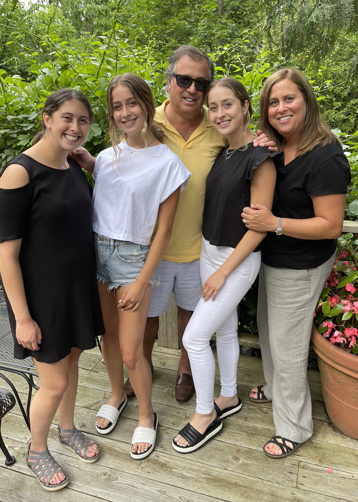
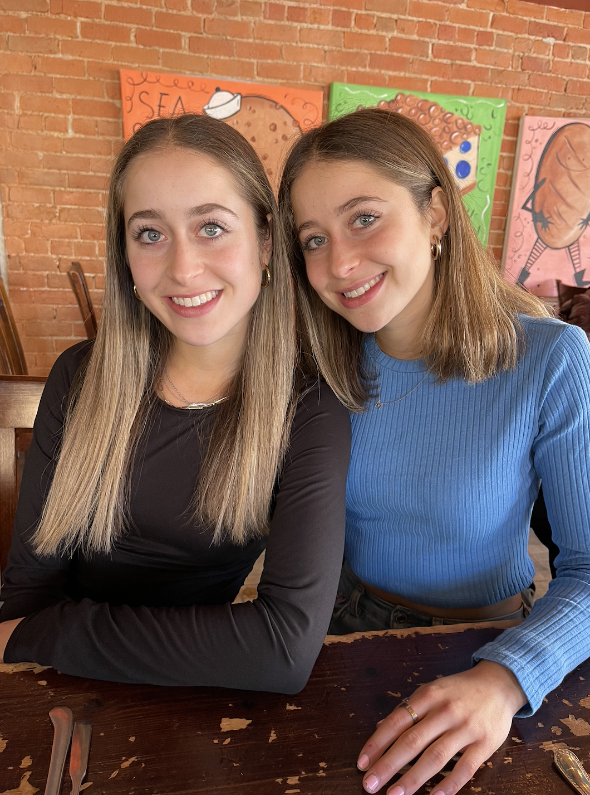
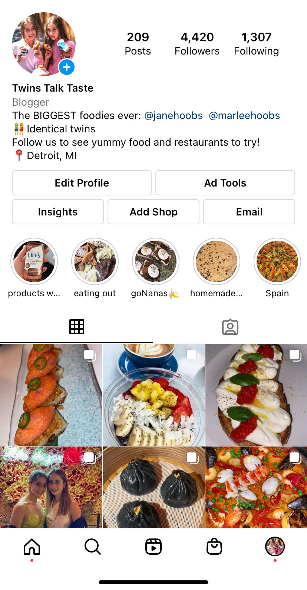
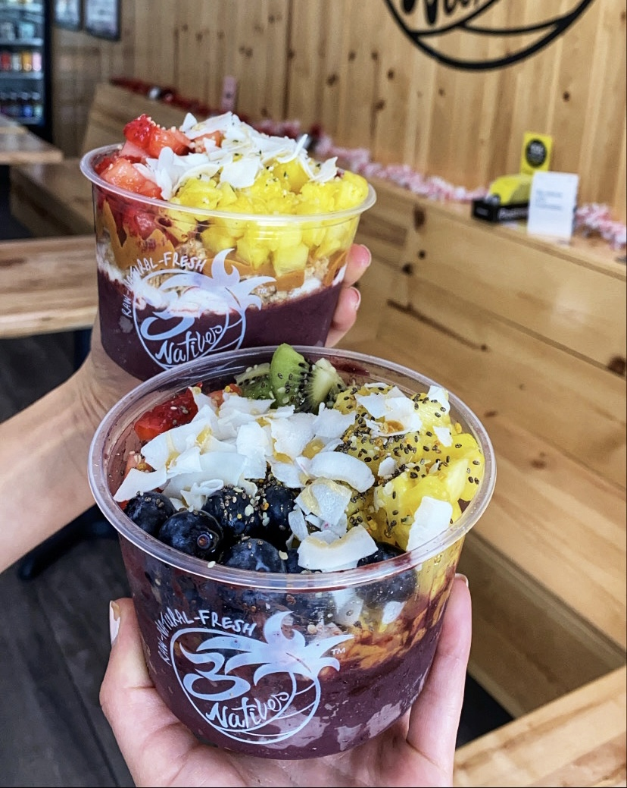
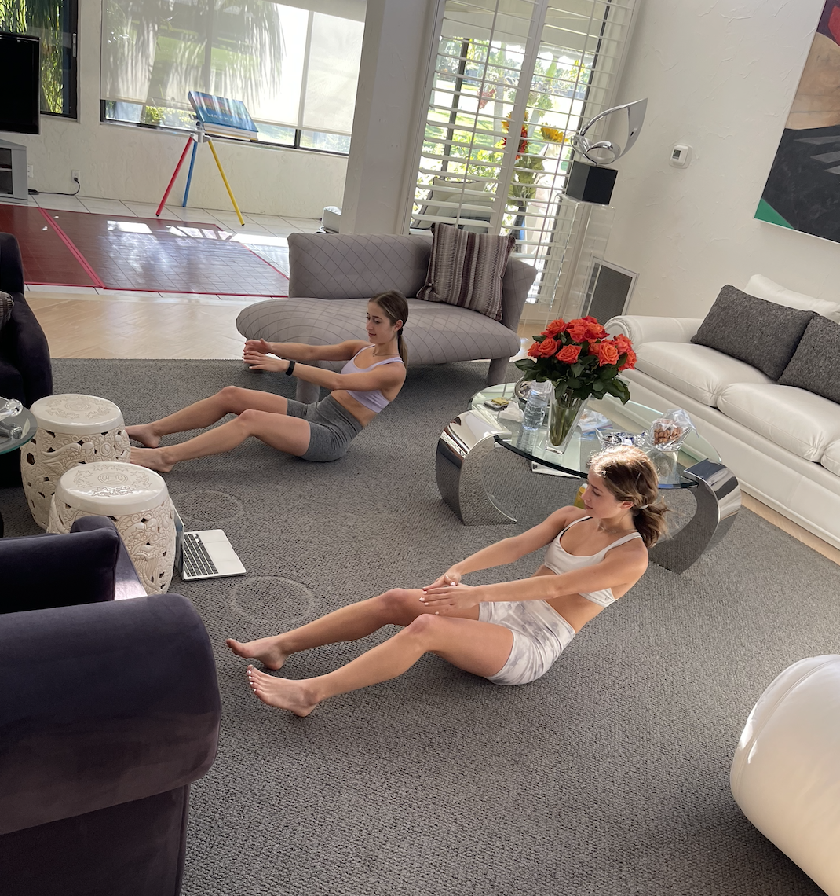

HOME LIFE
I was born and raised in West Bloomfield, Michigan in a family of five, one of which is my identical twin sister. Having a twin has played perhaps the most influential role in my life and is something that I have learned to truly appreciate. My family is extremely important to me, and I am constantly thankful for all that they have done for me.
 PASSIONS
When it comes to my passions, I am fascinated by the ways in which people are impacted by social media platforms and the information surrounding them through the means of our digital world. On a lighter note, I am passionate about health and wellness. Maintaining a consistent and beneficial daily routine, involving clean eating and exercise, has kept me at a healthy state, both physically and mentally. Furthermore, I am a self-proclaimed foodie and have co-run a food Instagram blog with my identical twin for many years (@twinstalktaste). I am always on the lookout for delicious new meals or cool restaurants to try!
  SKILLS
When it comes to my skills, I am a very hardworking and determined person in all facets of life. I always strive to achieve the goals that I set for myself, and persevere through anything that gets in the way. I have very strong communication skills, both verbal and written, which I find to be very important as we transition into an increasingly digital world. Referring to my more technical skills, I am a skilled writer and am proficient in Python while currently learning HTML and CSS. I am very curious, always seeking to learn more about a variety of subjects, and enjoy gaining new skills.
LOOKING AHEAD
I am a planner… and what happens when you are a planner? You like to plan out the future. In the near future, I plan to hold a job for a media company as a User Experience Researcher after graduating from the School of Information. With the skills that I gain from being a UX researcher, I would like to aid this specific company in improving their platform to be more usable and enjoyable for users.